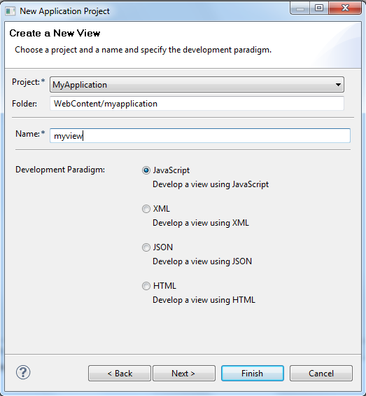
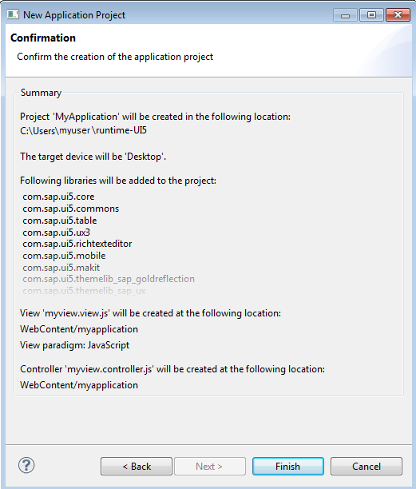

Creating a SAPUI5 Application Project
Prerequisites
- You have installed the SAPUI5 Application Development feature in your Eclipse installation.
Step 1: Start Application Wizard
You can start the "New SAPUI5 Application Project" wizard in the Eclipse IDE via New → Other… → SAPUI5 Application Development → Application Project:

Step 2: Fill project related data
- provide a project name
- optionally chose a location (prefilled from current workspace)
- choose the target device 'Desktop' (default) or 'Mobile', for Mobile see also SAPUI5 Mobile Library
- decide whether an initial view should be created (a view can also be created later on with the "SAPUI5 Application View" Wizard)

Step 3 (if initial view should be created): Fill view related data
- enter a folder in which the view should be created
- provide a view name
- choose the development paradigm (either JavaScript or XML or JSON or HTML view)
See also Creating a SAPUI5 Application View.

Step 4 (optional and only if initial view should be created): Confirmation page
Before finishing the wizard the summary information about selected data in previous pages is displayed. With 'Back'-Navigation the entered date could be corrected and displayed/controlled again before application project is created.

Result
After finishing the wizard
- a new dynamic web project is created. All relevant files are created under the WebContent folder.
- prefilled index.html is created which contains sap.ui.commons lib and sap_goldreflection theme in the boostrap in case of desktop target device and sap.m lib and sap_mvi theme in case of mobile target device
- web.xml is created which contains settings for ResourceServlet and SimpleProxyServlet (usage of SimpleProxyServlet is restricted to localhost and only intended for testing purposes and not for productive use)
- installed SAPUI5 UI lib plugins are automatically added to the Java Build Path and added to the deployment assembly
- SAPUI5 Class Path Container (if available) is automatically added to the JavaScript Include Path
- page index.html is opened in standard editor
- inside the JavaScript block of the index.html there is JavaScript code completion for SAPUI5 controls
- an automatic switch to the J2EE perspective is performed
- if "Create an Initial View" was flagged on the first page of the "SAPUI5 Application Project" wizard, also a view and view controller are created, see View Wizard and the coding to call the view is added to the index.html, if mobile target device was selected, special coding instantiating sap.m.App and sap.m.Page is generated
Then the user can edit the index.html e.g. by adding the snippet between script tags inside the body tags:
<script> // create a button var oButton = new sap.ui.commons.Button(); oButton.setText("demo"); // connect the button with the previously created <div> oButton.placeAt("content"); </script> ... <div id="content"></div>
For a MVC example see Creating a SAPUI5 Application View.
As a dynamic web project is created, the user can export the project as war file via right click, press Export… and chose Web → WAR file. When importing the generated war the external referenced SAPUI5 libs get copied into the /WEB-INF/lib folder (or can be copied in the workspace as web projects) but the JavaScript Include Path is not available in the imported project.